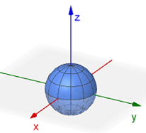
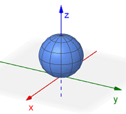
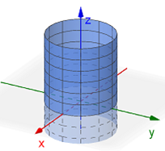
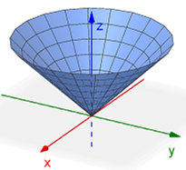
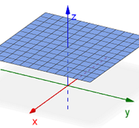
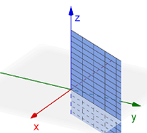

On this page, you will learn to:
- Convert equations between rectangular and spherical coordinate systems.
- Set up and evaluate triple integrals using spherical coordinates.
Of the three coordinate systems, the spherical coordinate system is probably the most difficult. This is partially the case because it is the least familiar -- you have been using the rectangular system for most of your mathematical life and cylinderical is just an extended polar structure, but spherical is defined in an almost completely different way. In addition, the variables we use and how they are used may vary slightly if you venture into other fields of study. For example, math and engineering may swap what a couple of the variables represent, or they may list the coordinates in a different order. We will use the spherical coordinates \((\rho, \phi, \theta)\), where \(\rho\) is the Greek letter rho pronounced as "row," \(\phi\) is the Greek letter phi usually pronounced as "fee" like in "feet," and of course \(\theta\) is the Greek letter theta.
The following GeoGebra applet will help illustrate how a point in space can be represented using the rectangular (Cartesian), cylindrical, and spherical coordinate systems. You may click-and-drag to rotate the view around the origin. Use the orange point (x, y) on the xy-plane to change the position of the blue point on the 3D graph above its xy position, and the orange slider on the xy-plane to adjust its height.
- Use the graph to review how the rectangular and cylindrical coordinate systems represent a point in space.
- Uncheck the Rectangular and Cylindrical boxes, and check the Spherical box. The current location of the blue point will switch from \((x,y,z)\) to \((\rho,\phi,\theta)\).
- Use the orange point and slider to change the position of the blue point on the 3D axes. The coordinates of the point again appear in the top corner, this time in the form \((\rho, \phi, \theta)\).
Can you describe what the spherical variables \(\rho\), \(\phi\), and \(\theta\) represent from the graph?
Here are some common graphs in spherical coordinates that we will encounter.
| Equation | Graph |
|---|---|
| Sphere at \((0,0,0)\) \(\rho=a\) \((a \gt 0)\) |
 |
| Sphere at \((0,0,a)\) \(\rho=2a\cos(\phi)\) \((a \gt 0,\, 0 \le \phi \le \pi/2)\) |
 |
| Cylinder \(\rho=a\csc(\phi)\) \((a \gt 0,\, 0 \lt \phi \lt \pi)\) |
 |
| Cone \(\phi=a\) \((a \ne 0, \pi/2, \pi)\) |
 |
| Horizontal Plane \(\rho=a \sec(\phi)\) \((0 \le \phi \lt \pi/2)\) |
 |
| Vertical Half Plane \(\theta=a\) |
 |
Converting Equations
There are four equations that we may need in order to convert equations between the rectangular and spherical coordinate systems. The first equation comes from the equation of a sphere centered at the origin while the other equations are the result of applying some right triangle trigonometry.
The following videos give a few examples demonstrating how to convert equations between rectangular and cylindrical coordinates.
Triple Integrals
Given a continuous function \(f(x,y,z)\) through a solid \(D\) that can be expressed using spherical coordinates, the triple integral in spherical coordinates of \(f\) over \(D\) can be computed using the follow formula where \(D\) can be desribed by the inequalities \(g_1(\phi,\theta) \le \rho \le g_2(\phi,\theta)\), \(c \le \phi \le d\), and \(\alpha \le \theta \le \beta\) for continuous functions \(g_1\) and \(g_2\).
\[\underset{D}{\mathop \iiint} \, f(x,y,z) \, dV = \int_{\alpha}^{\beta}\int_{c}^{d}\int_{g_1(\phi,\theta)}^{g_2(\phi,\theta)} \, f(\rho, \phi, \theta) \rho^2 \sin(\phi) \, d\rho \, d\phi \, d\theta\]The integrand will always contain the \(\rho^2 \sin(\phi)\) expression as part of the conversion of \(dV\) from rectangular to spherical. We will typically assume that \(\rho \ge 0\), \(0 \le \phi \le \pi\), and \(0 \le \theta \lt 2\pi\). While it is possible to change the order of integration, that would often require changing how the bounds are determined and that is not always easy. So, you will normally use the \(d\rho \, d\phi \, d\theta\) order of integration.